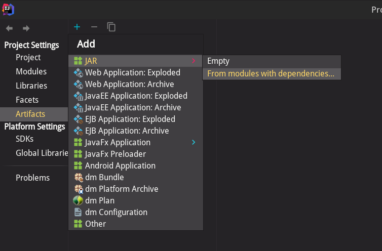
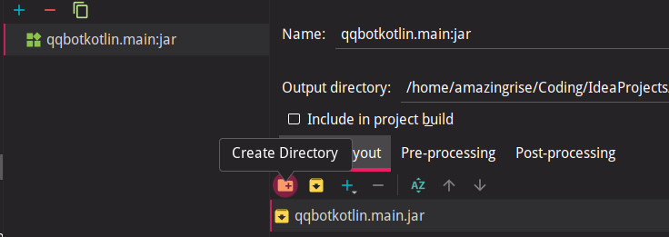
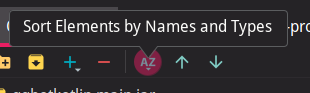
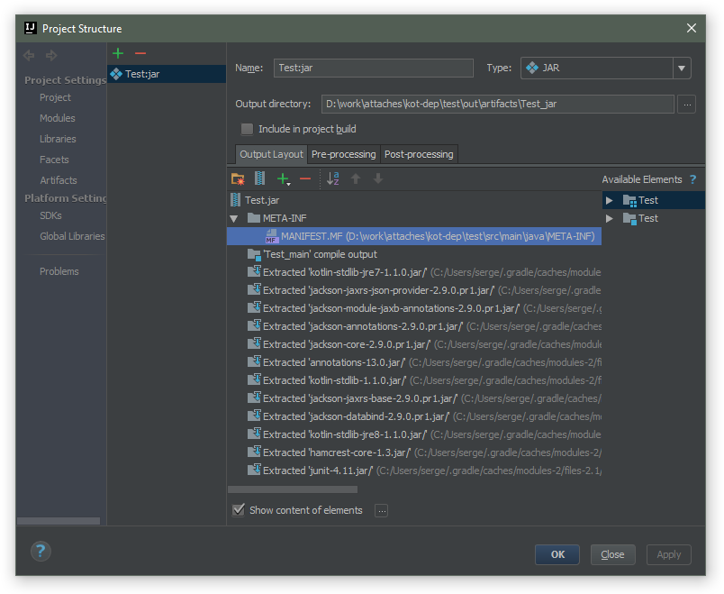

前言
最近在做QQ机器人的后端。本人用Sun的HTTPServer实现HTTP服务的提供，可以看本人的 GitHub Repo - QQ Group Chatting Robot
该项目用Kotlin编写，刚开始是在IDE里面直接F9运行的。但是时间长了这也不是事……
于是我打算把该项目打包成可执行的jar，这样java -jar xxxxx.jar就可以执行了，这多好呀。
然而我踩了一天的坑QAQ：IDE自动生成的jar直接执行会提示没有主清单属性
正确的食用方式
如何正确地将Kotlin项目封装为jar，
并且避免上述的错误？
第一步 创建Jar Artifacts
- 首先打开Intellij IDEA（这不废话么），菜单栏 File - Project Structure （或者快捷键Ctrl+Alt+Shift+S）
- 然后点击左边侧栏的Artifacts，点击加号添加，选择jar，From modules with dependencies。如图。
 - 在新弹出的Create JAR from Modules对话框中，选择Module为你要启动的模块（下拉菜单）。在本例中，模块为qqbotkotlin.main。
请注意将Main Class一栏留空，让它自己判断。（前提是你写的主函数的格式是正确的）
第二步 手动添加MANIFEST
为了避免出现我前言中说的那个错误，这里需要自己建立META-INF目录，并添加MANIFEST文件。
- 点击图示中的按钮
Create Directory，创建一个新的文件夹，名字叫META-INF
 - 选中
META-INF，点击上图中的+按钮，再点击菜单中的File。 - 这时，我们选择工程根目录下的
src/main/kotlin/META-INF/MANIFEST.MF，以便将MANIFEST.MF添加到该文件夹下。 - 如果成功的话，你会在这个窗口中看到
META-INF里面有刚刚添加的MANIFEST.MF。
Tips: 核对一下src/main/kotlin/META-INF/MANIFEST.MF的内容，应该为：1
2Manifest-Version: 1.0
Main-Class: main.MainKt
其中，本人的主类文件位于/src/main/kotlin/main/Main.Kt。可供参考。
第三步 调整位置，让新添加的MANIFEST后来居上
- 还是刚才的那个地方，取消图中所示
Sort Elemets by Names and Types，以便自定义排序。
 - 点击上箭头，让
META-INF目录上升到最上面。
第四步 完成
如果你的操作无误的话，现在的Project Structure看起来应该是这样的：

- 上述步骤确认无误了之后，
Apply，OK。 - 主界面菜单栏，选择
Build菜单栏下的Build Artifacts。 - 在新弹出的窗口中选择
Build。 - 这个时候你就会看到
/out/artifacts/xxxxxxx_main_jar/xxxxxxx.main.jar。
尝试在终端中运行，java -jar xxxxxxx.main.jar。没问题，正常执行！
参考
- 本人刚开始参照的是这个：将Kotlin项目打包为可执行JAR - Xabean
- 但是用方法1，运行jar时，java会提示
没有主清单属性的问题。 - 用方法2，也就是gradle编译jar，虽然可以运行，但是没有把依赖一并打包进来。
- 本人已经尝试过网上所说的各种方法，包括在build.gradle里面添加sourceDir啊，或者是jar下面什么from zipTree的，都不行。
- 后来参照类似案例才解决了这个问题。
类似案例：[SOLVED] How to turn a mixed Kotlin/Java project (with a Kotlin file as main class) into a JAR?
如果有问题，欢迎在下面评论区指出。新评论我会在第一时间在手机上收到（邮箱通知，并且手机自动收信）。欢迎大家的评论。